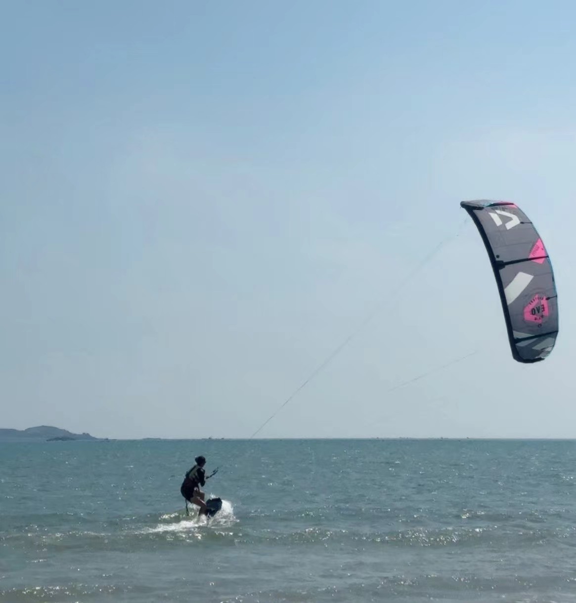

Hi, I'm Ruxin Chen.
M.S. Computer Science
B.E. Mechanical and Electrical Engineering
About Me
I am a second-year M.S. student in Computer Science at the Courant Institute of Mathematical Sciences, New York University. I am currently a research intern at the AI4CE Lab at NYU under the supervision of Prof. Chen Feng. Previously, I worked as a student researcher at The University of Hong Kong, where I was advised by Prof. Victor C. S. Lee. My research interests include embodied AI, 3D generative models, and multimodal learning.
Wanderland: Geometrically Grounded Simulation for Open-World Embodied AI
Wanderland: Geometrically Grounded Simulation for Open-World Embodied AI
Identity-Disentangled Multi-Person Multi-View Generation
Identity-Disentangled Multi-Person Multi-View Generation
ManipAria: A Multi-View Ego-Exo Dataset for Manipulation
ManipAria: A Multi-View Ego-Exo Dataset for Manipulation
Mapping NYC: Analyzing Large-Scale SLAM and SfM Systems
Mapping NYC: Analyzing Large-Scale SLAM and SfM Systems

Kitesurfing when there's wind, snowboarding when there's snow.
I love games, used to be a game tester at Lionbridge, and a Master TFT player.